NEWS & ANNOUNCEMENTS
新闻公告
品牌动态 / 企业资讯
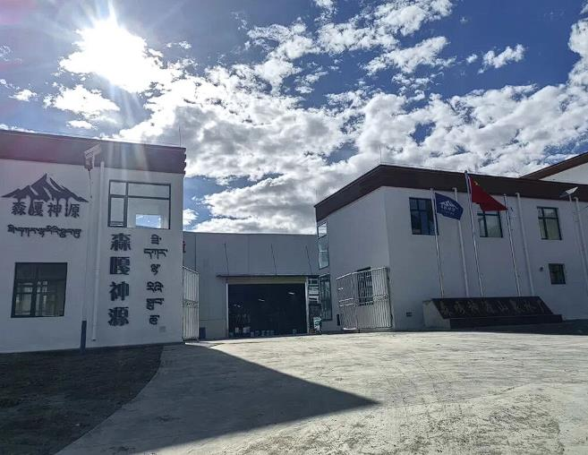
2025-09-06
森嘎神源天然山泉水生产基地灾后重建全面验收合格！品质基石再添硬核保障
近日，森嘎神源天然山泉水生产基地迎来关键节点——灾后重建全面验收工作圆满完成！标志着这座依托优质水源、配备先进工艺的现代化生产基地，再次正式具备稳定输出高品质天然山泉水的能力，为消费者喝上"放心水、健康水"筑牢产业根基。
展开阅读全文 ▼
近日，森嘎神源天然山泉水生产基地迎来关键节点——灾后重建全面验收工作圆满完成！标志着这座依托优质水源、配备先进工艺的现代化生产基地，再次正式具备稳定输出高品质天然山泉水的能力，为消费者喝上"放心水、健康水"筑牢产业根基。
图为森嘎神源天然山泉水生产基地现貌
从"硬件"到"流程"，验收覆盖生产全链条
本次验收由专业评审团队牵头，围绕生产基地的核心能力展开多维度核查，确保每一个环节都达到品质标准：
基地建设合规性：生产基地选址毗邻森嘎曲德寺，占地10亩，严格遵循食品生产场所的卫生规范与环保要求，周边无污染源，与水源地形成科学的空间布局，从源头规避环境对产品的潜在影响。
设备与工艺达标：基地全套引进先进的全自动化矿泉水灌装设备，涵盖水源抽取、过滤、灌装、封盖、贴标等全流程，设备精度与运行稳定性通过现场测试；同时，无菌生产车间的空气洁净度、温湿度控制等指标，均满足天然饮用水生产的严苛要求。
质量管控体系完善：验收团队重点核查了基地的质量追溯系统——从水源采集时间、批次编号，到生产过程中的水质检测数据（如微生物、重金属、矿物元素含量），再到成品出库记录，实现"每一瓶水可溯源、每一个环节可监控"，确保问题可查、责任可究。
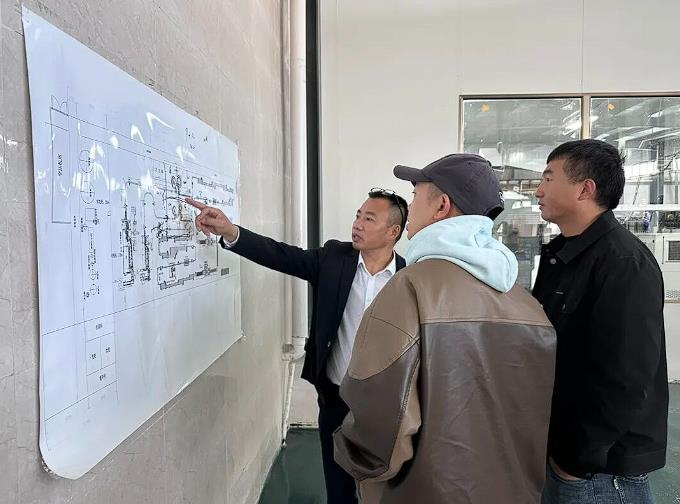
图为森嘎神源天然山泉水创始人赵小林为验收人员讲解工艺流程
以"品质"守"水源"，基地成为优质水的"守护者"
森嘎神源天然山泉水的核心优势在于其源自海拔5400米念康山的天然水源，而生产基地的建成与验收合格，正是为了让这份"天赋纯净"不打折扣。
基地采用"水源地直供+全密闭输送"模式，水源从水源地由符合食品安全标准的管道输送直接进入生产系统，避免中间环节的二次污染，最大程度保留天然山泉水低氘、低钠、富含有益矿物元素的特性。
生产过程中设置多重检测关卡：每批次水源需先通过预处理检测，确保初始水质达标；灌装前再经终端过滤与微生物检测，成品出库前还需进行抽样复检，三重保障让水质稳定可控。
验收合格不是终点，更是责任与价值的新起点
此次生产基地全面验收合格，不仅是对森嘎神源"品质至上"理念的认可，更承载着推动地方发展的社会责任：
稳定就业促增收：基地投产后，已为定日县长所乡10个行政村提供20多个固定就业岗位，让当地群众实现"家门口就业"，后续将随着产能提升进一步扩大就业规模。
未来，森嘎神源将以生产基地验收合格为契机，持续优化生产管理、提升产能效率，既守护好源自高原的天然好水，也通过产业发展为地方创造更多价值，让更多消费者感受到来自念康山的纯净与健康。
收起全文 ▲
西藏神源农牧开发有限公司向县教育系统捐赠矿泉水
公司向定日县教育系统捐赠矿泉水仪式在洛谐广场举行。
点击查看详情 ▼
本文详情为微信公众号外部链接文章，请前往微信公众号查看原文。
收起 ▲
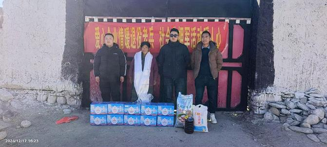
定日县开展"爱心企业情暖老兵，社会化拥军暖人心"活动
定日县民政和退役军人事务局联合西藏神源农牧开发有限公司等企业，向12位高龄且困难退役军人送去慰问品。
点击查看详情 ▼
近日，定日县民政和退役军人事务局联合定日县移动公司、西藏神源农牧开发有限公司、定日县粮食公司开展了一场温馨且意义深远的慰问活动，向我县12位高龄且困难退役军人送去慰问品，并致以崇高的敬意与深切关怀。此次活动旨在铭记他们为国家和人民所做出的卓越贡献，传承红色基因，弘扬拥军优属的光荣传统，让军人成为全社会最尊崇的职业，让退役军人成为全社会尊重的人。
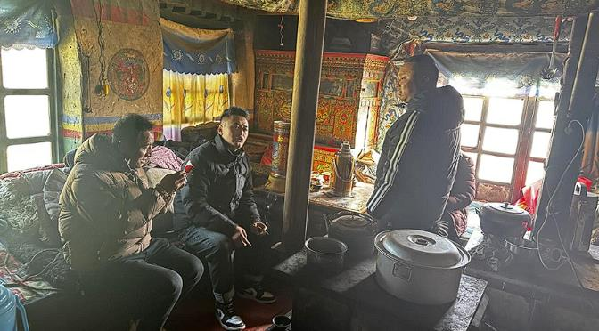
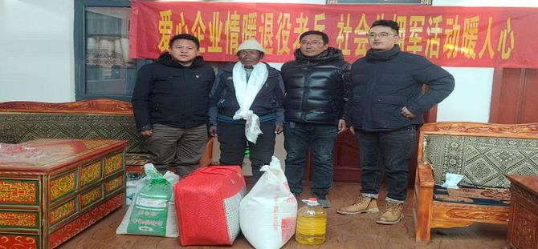
定日县移动公司、西藏神源农牧开发有限公司、定日县粮食公司主要负责人及工作人员带着精心准备的慰问品，深入到每一位退役军人家中。每到一处，都与老兵们促膝长谈，仔细询问他们的身体状况、家庭生活情况以及在生活中遇到的困难和问题。老兵们虽年事已高，但依然精神矍铄，回忆起往昔的军旅生涯，眼神中透露出坚定与自豪，他们讲述着在当兵时候冲锋陷阵、保家卫国的英勇事迹，仿佛那段激情燃烧的岁月就在眼前。各企业负责人都纷纷表示，老兵们曾经为国防事业和军队建设作出了贡献，帮扶困难老兵既带来社会温暖，也承担起一份社会责任和社会担当。
在慰问过程中，工作人员还为老兵们介绍了当前国家针对退役军人的各项优抚政策，确保他们能够及时享受到应有的待遇和保障。同时，叮嘱老兵们要保重身体，遇到困难及时向村委会和乡镇以及相关部门反映，并表示将持续关注他们的生活状况，努力为他们排忧解难。
此次慰问活动不仅为退役军人送去了物质上的关怀，更给予了他们精神上的慰藉和鼓励，让他们真切感受到了社会大家庭的温暖与尊重。这些老兵们是国家的宝贵财富，他们的英勇事迹和崇高精神将永远激励着我们砥砺前行。
来源：峰珠之窗，侵删。
收起 ▲
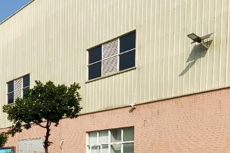
扎西顿珠赴食品安全包保企业、包保学校开展监督检查
县委副书记、政府县长扎西顿珠带队前往食品安全包保企业西藏神源农牧开发有限公司和包保学校开展食品安全监督检查。
点击查看详情 ▼
为进一步落实《地方党政领导干部食品安全责任制规定》，推进食品安全"两个责任"，维护人民群众"舌尖上的安全"。3月27日，县委副书记、政府县长扎西顿珠带队前往食品安全包保企业西藏神源农牧开发有限公司和食品安全包保学校县第二小学、县第一中学开展食品安全监督检查。县政府办、市监局和教育局相关工作人员陪同。
检查中，扎西顿珠首先深入现场，翻阅检查台账资料，对食品生产制作现场的环境卫生、餐饮具洗消、食品留样、原材料采购等情况进行仔细检查，现场与企业和学校相关负责人进行深入交流。
检查中强调，一要担起责任、筑牢防线。食品安全与广大群众、广大师生身体健康和生命安全息息相关，企业和学校要切实提高食品安全意识，坚决扛牢食品安全"两个责任"，确保"日管控、周排查、月调度"工作机制有效落实，筑牢食品安全防线。二要压实责任、保障安全。企业和学校要全面从严压紧压实工作责任，健全完善食品安全管理体系，不断提升食品安全工作管理精细化水平，营造良好食品安全卫生环境，切实保障群众和师生饮水、饮食安全。三要认领责任、抓好整改。县市监局等相关部门，要认真履职尽责，深入排查整治安全隐患，杜绝发生食品安全事故，对发现的安全隐患，做到全程跟踪、全程督促，坚决确保将问题彻底整改到位。期间，扎西顿珠还出席了森嘎神源山泉水"3·28"捐赠仪式，向西藏神源农牧开发有限公司积极发挥企业社会责任、回馈社会表示充分肯定。
来源：定日县融媒体中心公众号，如有侵权，请联系管理员删除。
收起 ▲
珠峰情冬至暖心慰问行
冬至佳节，公司携带山泉水、大米、面粉、清油看望慰问长所乡低收入家庭。
点击查看详情 ▼
珠峰情冬至暖心慰问行：
今日冬至，在长所乡政府领导的陪同下，西藏神源农牧开发有限公司携带森嘎神源山泉水、大米、面粉、清油看望慰问长所乡低收入家庭。
收起 ▲
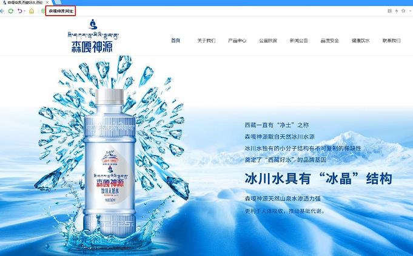
森嘎神源启用中文域名，保护网络知识产权，助力西藏好水走出去
公司正式启用中文域名"森嘎神源.网址"，标志着保护网络知识产权的重要一步。
点击查看详情 ▼
西藏神源农牧开发有限公司"森嘎神源"品牌官网正式启用中文域名"森嘎神源.网址"，这一举措标志着公司保护网络知识产权的重要一步，以确保在网络世界中能够准确地表达品牌的独特魅力，同时也将有助于实现公司的战略目标——"立足西藏、走出西藏、享誉全国"。
启用中文域名的好处不言而喻：首先，及时注册中文域名能有效保护公司品牌的知识产权，防止域名被恶意注册和滥用；其次，中文域名能够更好地适应华语用户的阅读和搜索习惯，提升用户体验；第三，中文域名也能够增强品牌的本土特色和认同感，使消费者更容易记忆和发现品牌；最后，中文域名在国内外推广时也能够直观地传递品牌的诉求，有助于西藏好水在国际市场上赢得更多机会。
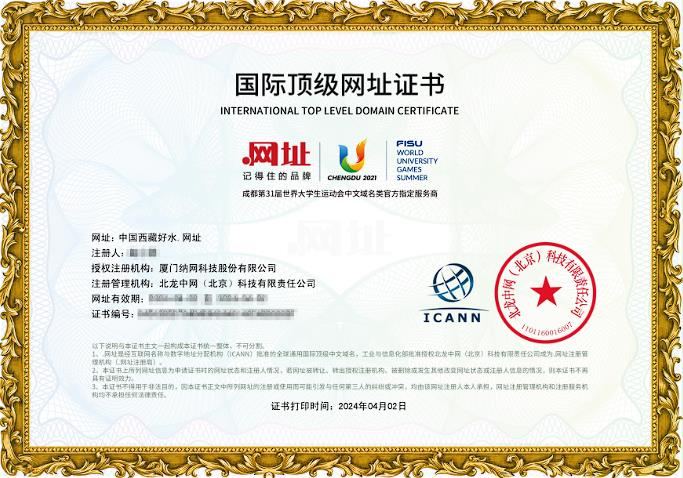
通过同步注册保护"中国森嘎神源.网址"和"中国西藏好水.网址"，西藏神源农牧开发有限公司进一步巩固了"森嘎神源"品牌的网络存在，确保其在互联网上的可识别性和独特性，并有效防止了恶意注册和盗用。
通过开通中文域名，森嘎神源向全国各地的消费者传递了一个清晰而直接的信息：我们是中国优质品牌，我们的产品来自西藏，我们为您提供西藏好水。
随着消费者对健康饮品的需求不断增长，森嘎神源以其天然、优质的水源和先进的生产工艺赢得了广大消费者的青睐。作为西藏地区领先的饮用水品牌，森嘎神源以西藏的优质水资源为基础，通过严格的水质检测和科学的生产流程，确保每一瓶水都符合国家标准，为消费者提供放心、安全、高质量的天然饮用水。
此外，森嘎神源还注重社会责任，积极参与公益事业。公司作为西藏地区的企业典范，始终坚持可持续发展的理念，推动当地经济的繁荣和社会的进步。可以预见，随着中文域名的启用，森嘎神源将更好地推广品牌形象，实现品牌的全面升级。
来源：今日头条，侵删。
收起 ▲
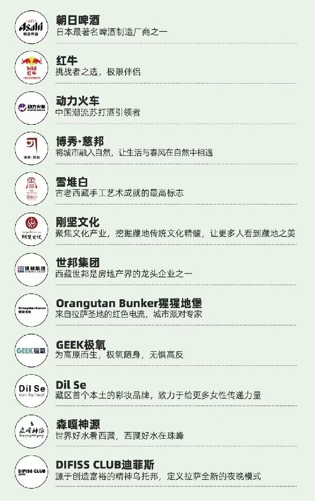
2023 07 21喜马拉雅音乐节官方指定饮用水
森嘎神源天然山泉水成为2023年喜马拉雅音乐节官方指定饮用水品牌。
点击查看详情 ▼
2023年7月21日，森嘎神源天然山泉水凭借卓越品质，成为喜马拉雅音乐节官方指定饮用水品牌。
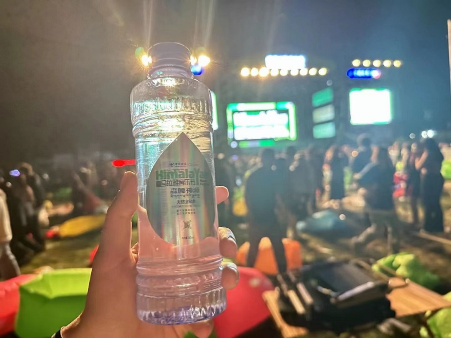
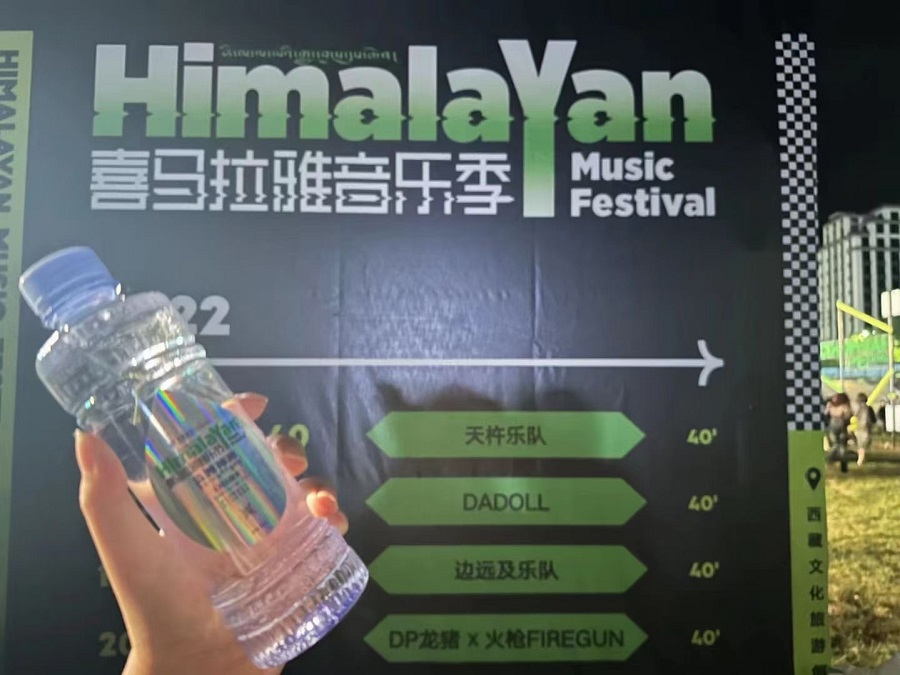
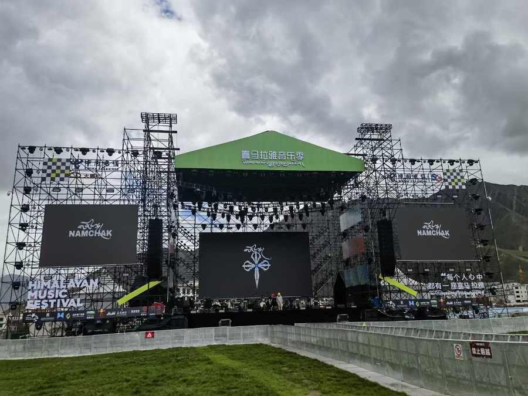
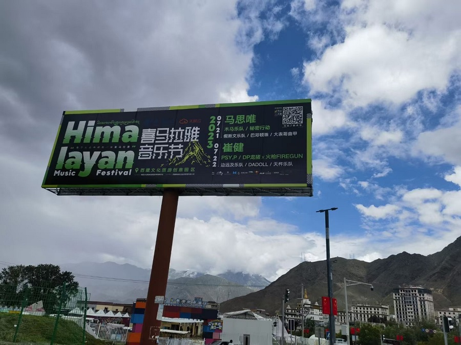
收起 ▲
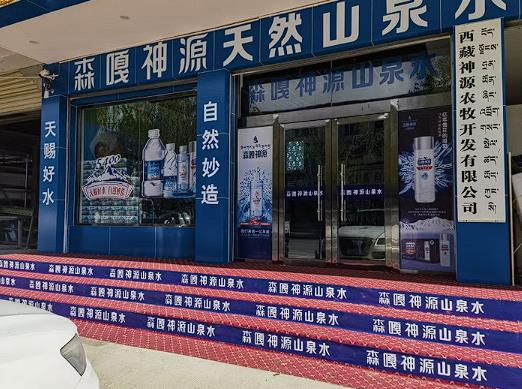
我们新店开业啦！！！（地址：日喀则市专卖店（曲荣门塘路珂尔药业商品房）)
"森嘎神源山泉水"日喀则市专卖店正式开业，欢迎新老客户前来选购。
点击查看详情 ▼
西藏神源农牧开发有限公司"森嘎神源山泉水"新店正式开业了！日喀则市专卖店位于曲荣门塘路珂尔药业商品房，欢迎新老客户前来选购我们的天然山泉水。
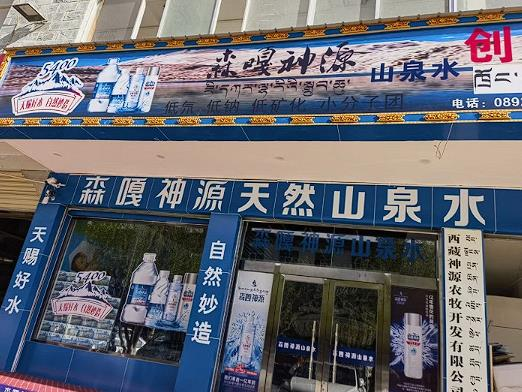
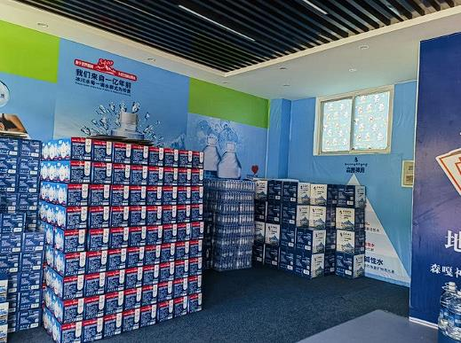
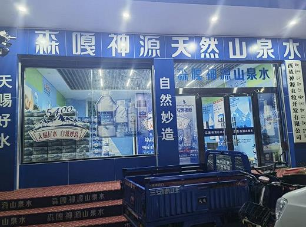
作为西藏神源农牧开发有限公司的旗舰品牌，"森嘎神源山泉水"是以纯净、天然、安全为理念饮用水。其水源地位于雪域高原，依托青藏高原独特的地形和气候条件，经过多年的自然过滤和地下流动，保持着天然、优质的水质特点，富含多种矿物质和微量元素，味道清爽甘美，具有很高的营养价值。
"森嘎神源山泉水"一直秉承"自然、健康、纯净"的理念，采用国际先进的生产技术和严格的检测标准，保证产品质量和安全性。此外，公司还注重环保，致力于保护水源，提高工艺水平，努力打造出更优质的饮用水产品。
随着"森嘎神源山泉水"新店的开业，我们将为广大消费者提供更加优质、便捷的购买体验。我们相信，通过不断努力和创新，我们的企业必将走向更加广阔的市场，同时也会为更多的消费者带来健康和幸福。
最后，感谢各位客户对"森嘎神源山泉水"的支持和信任，在未来的日子里，我们将秉承诚信、专注、共赢的经营理念，为您提供更好的产品和服务。让我们一起享受纯净、优质的生活！
收起 ▲
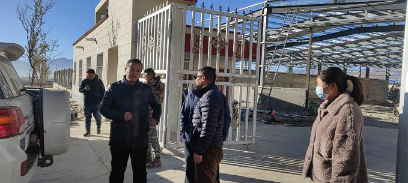
定日县扎西顿珠县长、鄢树文副县长一行到森嘎神源调研指导
2021年11月10日，定日县新任县长扎西顿珠带队到森嘎神源山泉水厂考察调研。
点击查看详情 ▼
2021年11月10日，定日县新任县长扎西顿珠县长带队，协同分管产业的鄢树文副县长一行到森嘎神源山泉水厂考察调研。现场，扎西顿珠县长耐心倾听了森嘎神源的发展情况，仔细听取了企业发展的现实诉求。扎西顿珠县长对森嘎神源的现有发展给予了充分的肯定，同时也对企业发展提出了新的期望与要求。
收起 ▲
定日县上海援藏陶文渊县长带队到森嘎神源考察指导
2021年11月3日，定日县上海援藏陶文渊常务副县长带队到森嘎神源山泉水厂调研指导。
点击查看详情 ▼
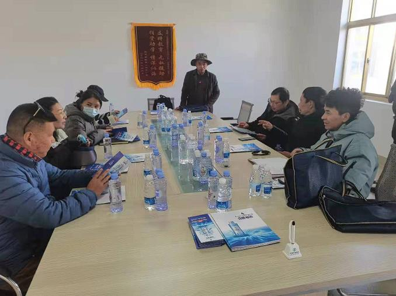
2021年11月3日，定日县上海援藏陶文渊常务副县长带队，协同定日县商务局领导到森嘎神源山泉水厂调研指导，现场参观了森嘎神源生产作业现场，举行了座谈会。陶文渊副县长对森嘎神源的发展与森嘎神源对当地乡村振兴事业所做的努力非常关心，同时，陶文渊副县长也指出：森嘎神源在发展好自己的同时，还是要继续坚持带动更多的人，大力为当地乡村振兴事业作出更多贡献。
收起 ▲
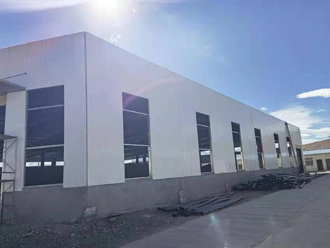
森嘎神源追加投资6000万元用于建设水厂二期工程
公司在2021年6月启动二期工程建设，追加投资6000万元，丰富产品线，将品牌做大做强。
点击查看详情 ▼
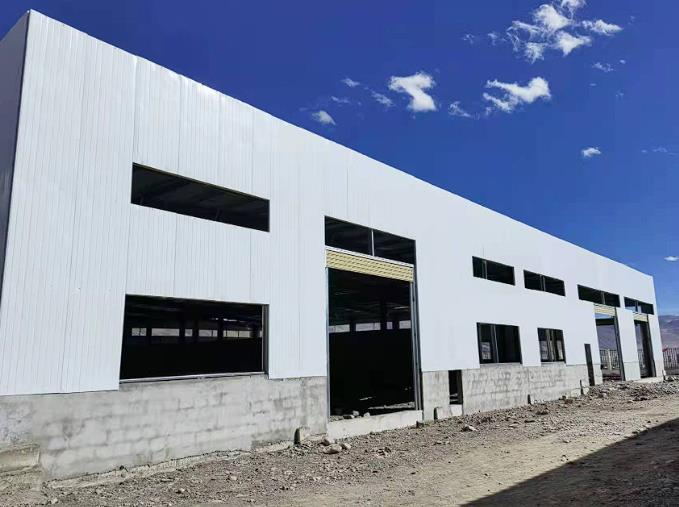
随着市场的不断扩大，森嘎神源在2021年6月已启动二期工程建设。公司追加投资6000万元用于现有厂房改扩建，生产线技术改造升级；二期厂房建设及先进设备购进。丰富森嘎神源山泉水产品内容，开发适用于高端领域的包装水：包括婴幼儿专用水，中老年专用水，护肤保湿用水等。将森嘎神源品牌做大做强，立足西藏，走出西藏，享誉全国！截止目前，森嘎神源山泉水厂二期建设主体工程顺利完工。
收起 ▲
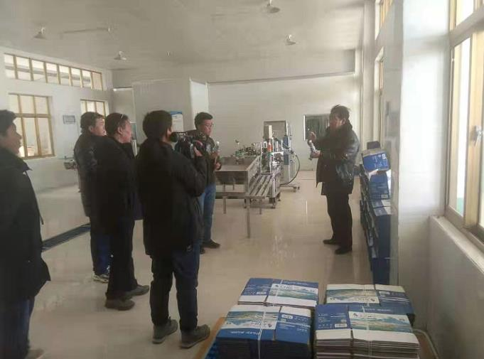
定日县顿珠书记一行莅临森嘎神源调研指导
定日县顿珠书记在森嘎神源山泉水厂正式运营生产之际带队现场调研指导。
点击查看详情 ▼
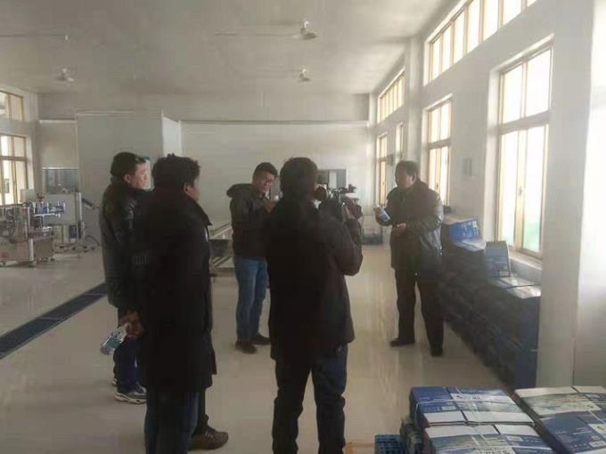
2021年4月23日，在森嘎神源山泉水厂正式运营生产之际，定日县顿珠书记带队到森嘎神源现场调研指导工作。顿珠书记现场品尝了森嘎神源山泉水产品，对水的品质给予了高度的认可与评价。同时，顿珠书记也十分关心森嘎神源山泉水的销售渠道情况，为森嘎神源的发展给予了无私的关心与鼓励。
收起 ▲
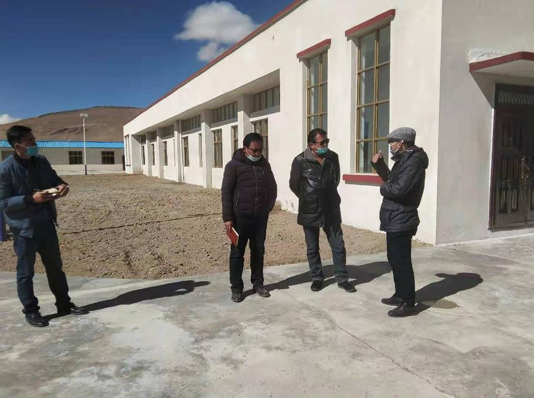
定日县王珅县长莅临森嘎神源视察调研
2020年，定日县王珅县长带队对森嘎神源山泉水厂进行实地考察调研，参观了生产线。
点击查看详情 ▼
2020年，由定日县王珅县长带队，对森嘎神源山泉水厂进行实地考察调研，参观了我公司的生产线，详细了解了作业流程。王珅县长非常关心森嘎神源的发展，王珅县长指出：一定要好好将水厂经营好，为当地百姓带来大实惠。
收起 ▲